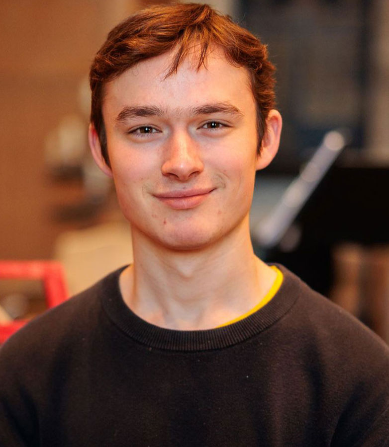

Composer, Pianist & Educator

Edward Tait is a London-based composer, whose music has been performed across the United Kingdom, Ireland and the United States, by ensembles like the London Sinfonietta, Carducci Quartet and Orion Orchestra. He is currently collaborating with the Arquia Duo on recording his song cycle Vectis, based on poems by Mollie Mardel. In November, he will receive his debut broadcast on BBC Radio 3, following success in the NCEM Young Composer Award.
Edward studies at the Royal Academy of Music with Gareth Moorcraft and Louise Drewett, and he is artistic director of the MetroLand Music Festival.
Download CVSolo repertoire:
J.S. Bach – Invention No. 1 in C major BWV 772
J.S. Bach – Invention No. 8 in F major BWV 779
J.S. Bach – Prelude and Fugue in G major from Well-Tempered Clavier Book 2
Beethoven – Bagatelle Op. 119 No. 1
Beethoven – Piano Sonata No. 1
Brahms – Intermezzo Op. 116 No. 6
Brahms – Scherzo from F–A–E Sonata
Chopin – Ballade No. 1
Chopin – Prelude Op. 28 No. 20
Debussy – Children's Corner
Grieg – Humoresque Op. 6 No. 2
Liszt – ‘Orage’ from Années de pèlerinage
Oscar Peterson – Jazz Exercise No. 2
Ravel – Menuet from Le Tombeau de Couperin
Ravel – Sonatine
D. Scarlatti – Sonata K. 443
R. Schumann – ‘Herberge’ from Waldszenen
Satie – Vexations
Scriabin – Piano Sonata No. 4
Peter Sculthorpe – Snow, Moon and Flowers
Edward Tait – Cloches I, II and V
Tchaikovsky – Dumka
Chamber repertoire:
J.S. Bach – Violin Concerto in A minor BWV 1041
Bartok – Romanian Folk Dances IV, V and VI
Elgar – Violin Sonata
Faure – Elegie Op. 24
Mozart – Violin Sonata No. 24
Shostakovich – Piano Trio No. 1
Concerto/orchestral repertoire:
Copland – Appalachian Spring
Mozart – Piano Concerto No. 23
Organ repertoire:
Elgar – Vesper Voluntaries No. 1 and No. 2
Purcell – Ground in C minor ZD 221
Purcell – Lillibulero
Edward Tait – Vectis Tableau I
27 October 2026 • Royal Birmingham Conservatoire
18 November 2026 • Angela Burgess Recital Hall, Royal Academy of Music
13 December 2026 • Lamb and Flag, Oxford
23 January 2027 • St Christopher School, Letchworth
11 February 2027 • St Mary the Virgin, Aylesbury
21 February 2027 • Corpus Christi RC Church, Tring
25 April 2027 • St Paul's Church, Clapham
Programme TBC
27 April 2027 • St Alkmund's Church, Shrewsbury
Programme TBC
For commissions, collaborations or performance enquiries:
Publisher: NoteWelder Music
YouTube: @edwardtait-06
SoundCloud: edward-tait-composing
Instagram: @ta.ity06
Facebook: Edward Tait